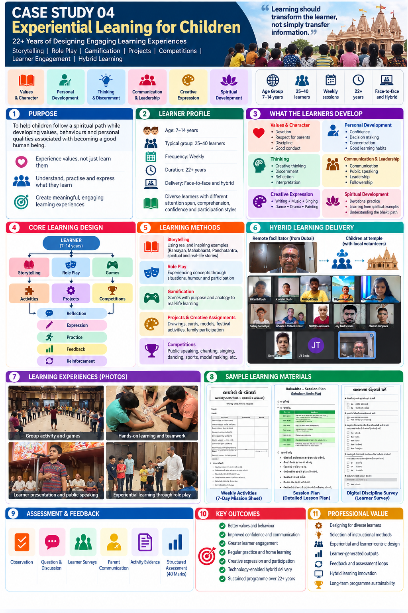
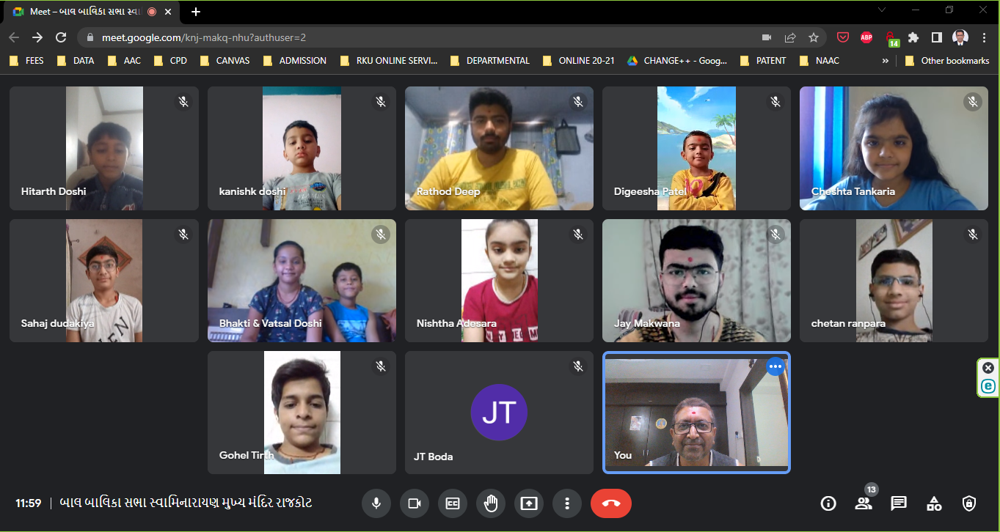
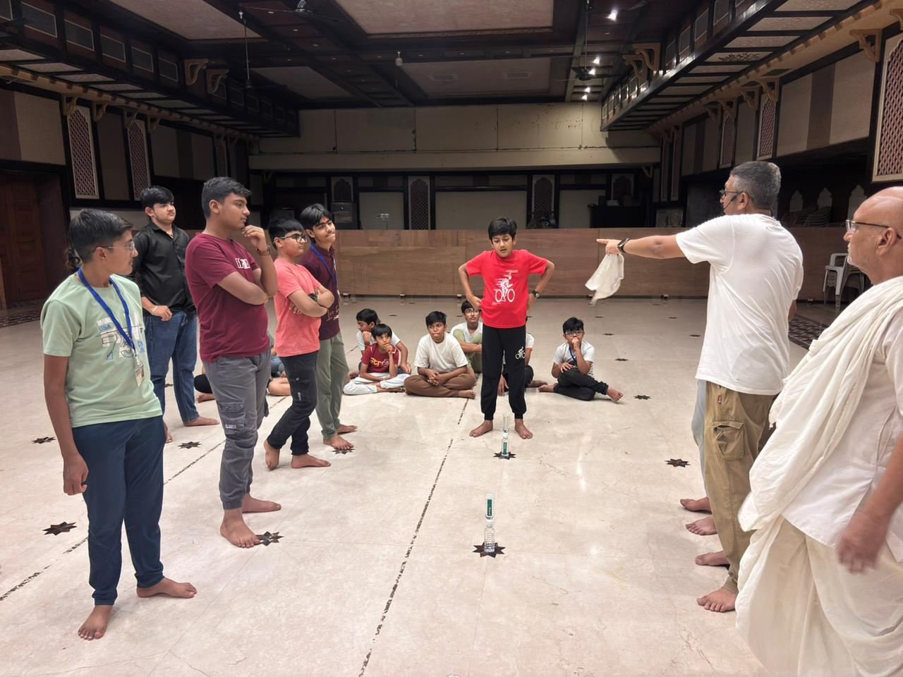
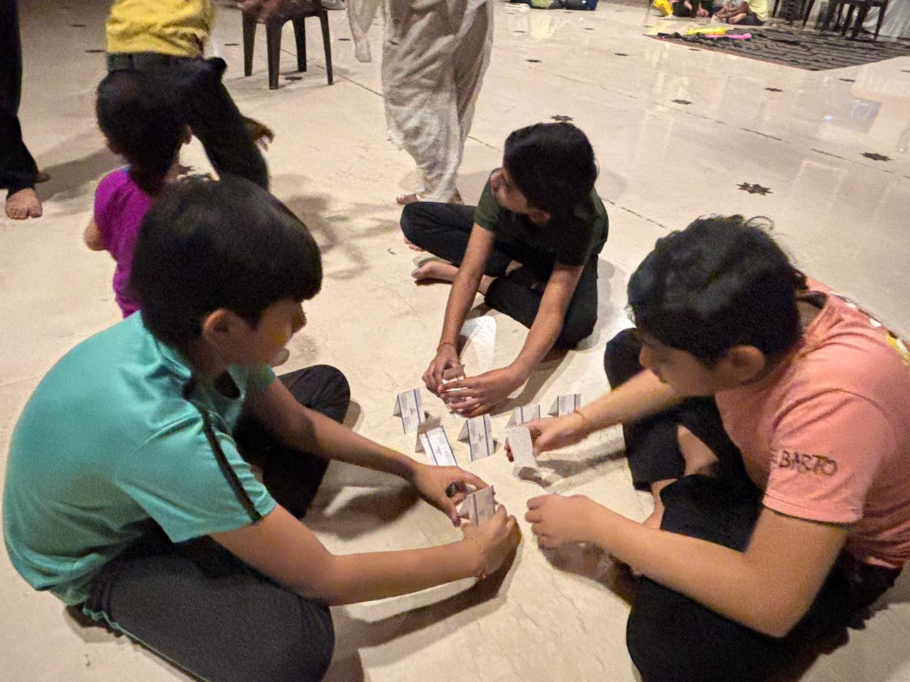
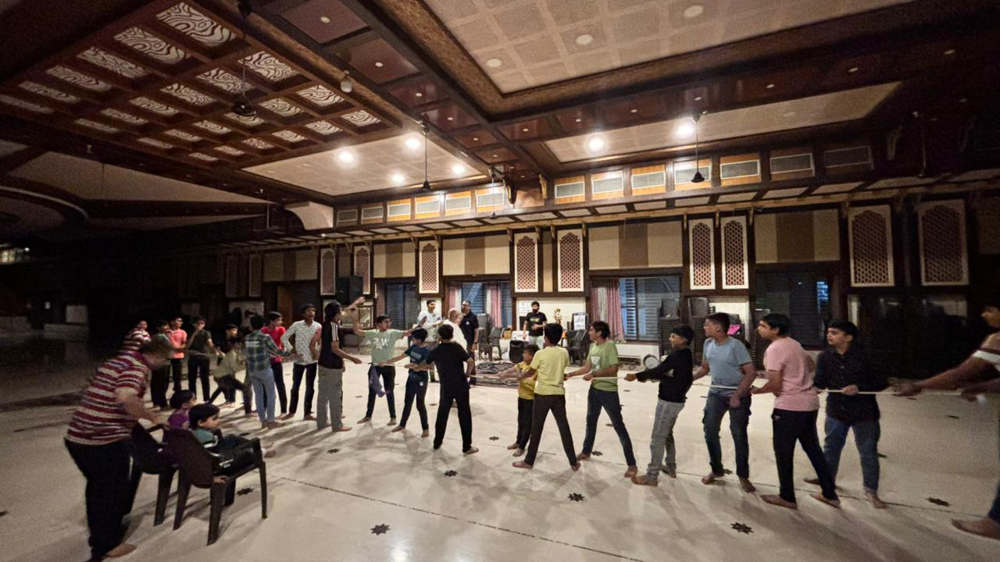
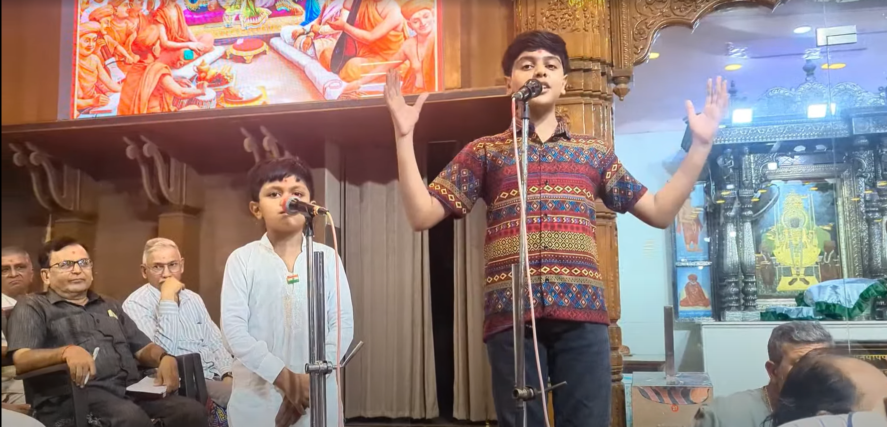
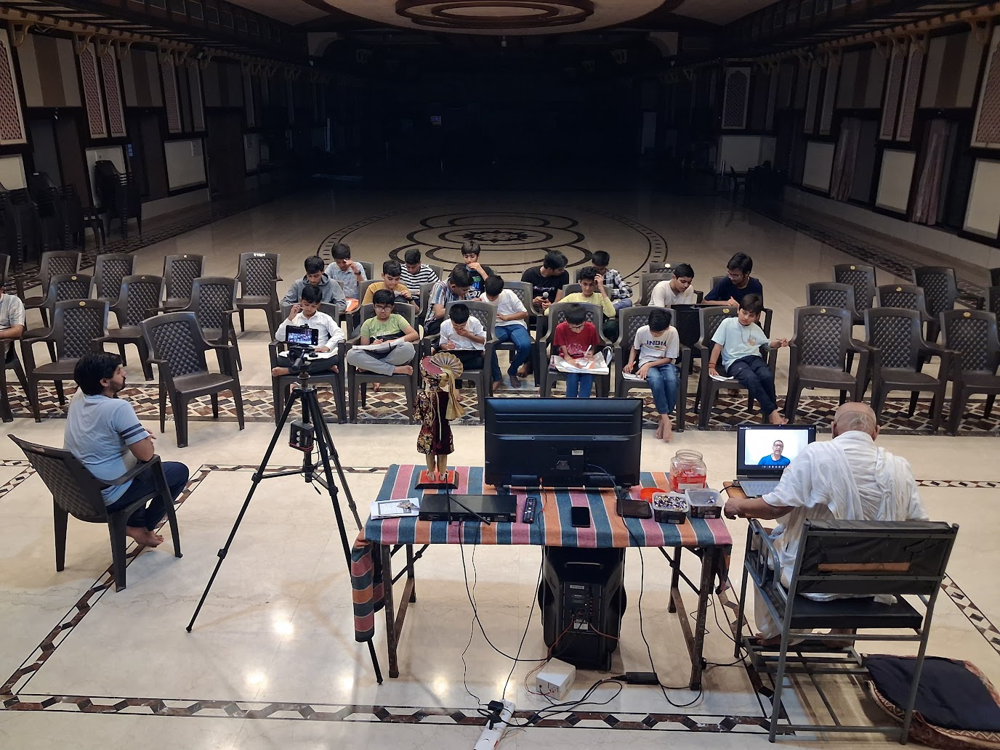
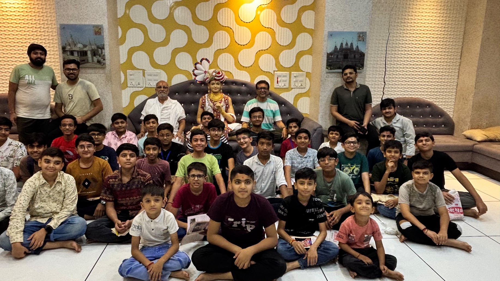

Experiential Learning for Children
22+ Years of Designing Engaging Learning Experiences
A long-running weekly learning programme for children aged 7–14 combining storytelling, role play, games, projects, competitions, reflection, practice and feedback to turn values and concepts into experiences learners can understand, express and apply.
Learning should transform the learner, not simply transfer information.
Learners
Children aged 7–14 years; typically 25–40 learners in a weekly group.
Duration & continuity
A structured programme sustained for more than 22 years.
Delivery
Face-to-face learning, later adapted to a facilitator-remote / learner-physical hybrid model.
Development focus
Values and character, personal development, thinking, communication and leadership, creative expression and spiritual development.
Case Study 04 — Complete Learning Experience Map
The infographic summarizes the learner profile, development objectives, learning methods, hybrid delivery, learning experiences, materials, assessment and professional value of the programme.

Purpose
The programme was designed to help children follow a spiritual path while developing values, behaviours and personal qualities associated with becoming a good human being. The emphasis was on experiencing values rather than simply learning about them.
Experience
Stories, activities, games, role play and participation were used to make learning experiential.
Practice & Expression
Learners practised what they learned, expressed their understanding and reflected on behaviour.
Learner Profile
Age & Group
Children aged 7–14 years; typically 25–40 learners; diverse attention, confidence, comprehension and participation styles.
Delivery Pattern
Weekly sessions, sustained for 22+ years, delivered face-to-face and through hybrid learning.
What the Learners Develop
Values & Character
Devotion, respect for parents, discipline, good conduct and understanding appropriate behaviour.
Personal Development
Confidence, decision-making, concentration, meditation and good learning habits.
Thinking
Creative thinking, discernment, reflection and interpretation.
Communication & Leadership
Communication, public speaking, leadership and followership.
Creative Expression
Writing, music, singing, dance, drama, painting and model making.
Spiritual Development
Devotional practice, spiritual examples and understanding the bhakti path.
Core Learning Design
Rather than relying on one teaching method, the programme uses different experiences according to what the learner needs to develop.
Learning Methods
Storytelling
Spiritual, historical, literary and real-life examples introduce concepts and create triggers for questioning, interpretation and expression.
Role Play
Difficult concepts are converted into situations that children can experience through participation and performance.
Gamification Through Analogy
Games are used with a learning purpose, connecting the experience to a concept through analogy and discussion.
Projects & Creative Assignments
Drawings, cards, models, festival activities and family participation create learner-generated outputs.
Competitions & Performance
Public speaking, chanting, singing, dancing, sports, model making and other performance formats provide practice and expression.
Learning Transfer Beyond the Session
The weekly activity sheet creates a bridge between the learning session and everyday behaviour through a mission, completion status, learner reflection and parent acknowledgement.
Examples include sharing session learning with family, spending device-free time with parents or grandparents, organizing personal belongings, exercise, avoiding food waste, devotional activities, and reflecting on mistakes and seeking forgiveness.
The design intentionally moves learning from “I learned this in class.” to “I practised this in my life.”
Hybrid Learning Delivery
After relocation to Dubai, the physical learning environment was retained rather than moving the children into individual online classes.
Design decision: move the facilitator online without removing the social advantages of children learning together physically.
Assessment & Feedback
During Sessions
Questions, discussion, observation and learner responses.
Structured Feedback
Survey forms, parent communication and annual parent meetings.
Activity Evidence
Weekly activity completion, learner reflection and parent acknowledgement.
Structured Assessment
A 40-mark framework covering dimensions including honesty, effort, attitude and regularity.
Professional Value
This case demonstrates transferable Learning & Development and Instructional Design capability beyond the specific subject context.
Designing for Diverse Learners
Adapting activities and communication to different ages, confidence levels and learning behaviours.
Instructional Method Selection
Selecting storytelling, role play, games, projects, competition and reflection according to learning purpose.
Experiential & Learner-Centred Design
Moving from information delivery toward participation, practice, expression and reflection.
Learner-Generated Outputs
Using presentations, creative assignments, projects, models and activities as evidence of learning.
Feedback & Assessment Loops
Combining observation, discussion, surveys, parent communication and structured activity evidence.
Hybrid Delivery & Sustainability
Maintaining an established learning experience while adapting delivery to changing circumstances and technology.
Evidence
The public portfolio uses a curated set of original artefacts supplied for this case. The links below are packaged with this page using stable, repository-friendly filenames so they resolve correctly when the folder is uploaded to GitHub.

Learning Session — Group ParticipationPhotographic evidence of children participating in a facilitated learning session.View photo
Learning Through GamesCollaborative activity showing learning through participation, interaction and play.View photo
Hands-on Team ActivityChildren working collaboratively on a structured hands-on challenge.View photo
Activity-Based LearningPhysical group activity used to create participation, teamwork and experiential learning.View photo
Public Speaking / Learner ExpressionLearner presentation and expression as observable evidence of participation and confidence-building.View photo
Hybrid Learning SetupEvidence of technology and physical learning environment supporting remote facilitation.View photo Online Learning During COVIDEvidence of adaptation from face-to-face delivery to online participation.View photo
Online Learning During COVIDEvidence of adaptation from face-to-face delivery to online participation.View photo

Programme Group — 2026Recent group evidence showing continuity of the learning community.View photoFrom information to experience to practice
Understand the learner → choose the right experience → engage → practise → express → reflect → assess → reinforce → transfer into everyday life.
The methods and technologies have evolved over more than two decades, but the underlying learning-design principle has remained consistent: design the experience around the learner and the intended development objective.